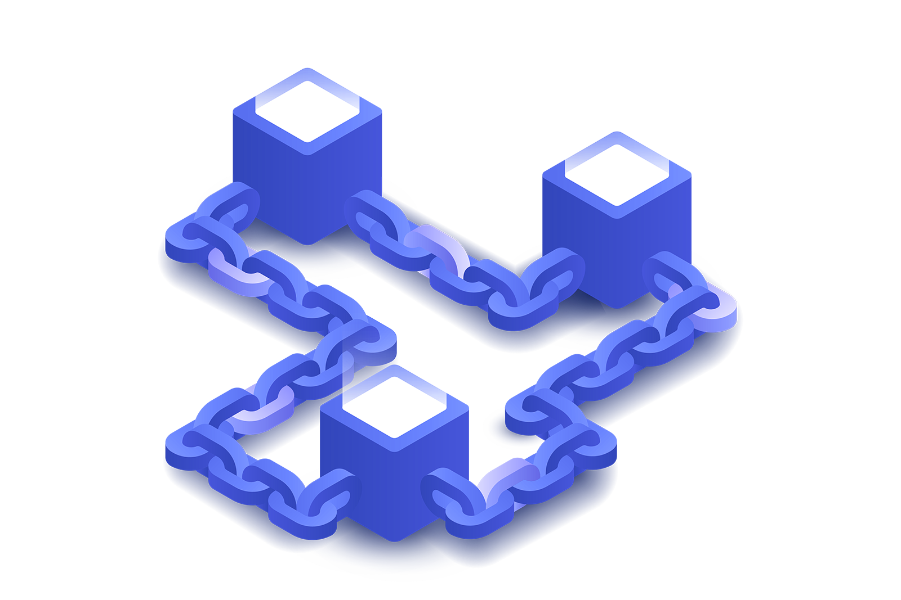

O Que é computação em nuvem
A computação em nuvem (ou cloud computing) é um modelo de tecnologia que permite acessar recursos computacionais — como servidores, armazenamento, bancos de dados, redes, softwares e muito mais — através da internet, sem a necessidade de possuir fisicamente esses equipamentos. Em vez de instalar programas ou armazenar arquivos no computador local, tudo pode ser feito pela "nuvem", ou seja, por servidores remotos mantidos por empresas especializadas, como Amazon Web Services (AWS), Google Cloud Platform (GCP) e Microsoft Azure.
A primeira grande aplicação comercial da computação em nuvem foi com o serviço Salesforce. com, lançado em 1999. Ele permitia que empresas acessassem um software de gestão de clientes via navegador, eliminando a necessidade de infraestrutura local.
A computação em nuvem revolucionou a forma como lidamos com tecnologia. Ela democratizou o acesso a recursos antes caros e complexos, acelerou o desenvolvimento de inovações e permitiu que empresas crescessem rapidamente com baixo custo inicial. Hoje, ela está presente em praticamente tudo: dos serviços de streaming aos aplicativos de banco e até mesmo em sistemas de inteligência artificial.
Big data o poder dos dados
Vivemos na era da informação, onde todos os dias bilhões de dados são gerados por pessoas, empresas, máquinas e dispositivos conectados à internet. É nesse contexto que surge o conceito Big Data — um conjunto de tecnologias, processos e práticas voltadas à coleta, processamento e análise de grandes volumes de dados, com o objetivo de extrair insights valiosos para a tomada de decisões.
O que é Big Data?
Big Data refere-se a conjuntos de dados tão grandes, complexos e dinâmicos que métodos tradicionais de processamento não conseguem lidar de forma eficiente. Esse conceito é geralmente descrito por 5 Vs:
- Volume: Quantidade massiva de dados gerados a cada segundo.
- Velocidade: Rapidez com que esses dados são produzidos, transmitidos e processados.
- Variedade: Diferentes formatos de dados (texto, imagem, vídeo, áudio, sensores, etc.).
- Veracidade: Qualidade e confiabilidade das informações.
- Valor: A utilidade dos dados para gerar conhecimento e vantagem competitiva.
Blockchain Além do Bitcoins: Aplicaões em diversas areas
Quando se fala em blockchain, muitas pessoas logo pensam em Bitcoin ou outras criptomoedas. De fato a blockchain surgiu como a tecnologia por trás do Bitcoin, garantindo segurança, descentralização Transparência nas transações financeiras, No entanto o potencial da blockchain vai muito além do universo das moedas digitais — ela pode ser aplicada em diversas áreas da economia e da sociedade como
-
1. Contratos Inteligentes (Smart Contracts)
Na área jurídica e de negócios, smart contracts são códigos programados para executar automaticamente acordos quando certas condições são atendidas. Por exemplo, um contrato pode liberar um pagamento automaticamente quando um produto é entregue. Isso reduz burocracias, custos com intermediários e riscos de inadimplência.
-
2. Cadeia de Suprimentos e Logística
Empresas podem usar blockchain para rastrear produtos do início ao fim da cadeia de produção. Desde a origem da matéria-prima até a entrega ao consumidor final, todos os dados ficam registrados de forma transparente, ajudando a prevenir fraudes, garantir autenticidade e melhorar a gestão de estoque.
-
3. Saúde
Na saúde, blockchain pode ser usada para armazenar e compartilhar prontuários médicos de forma segura e privada. Pacientes e profissionais autorizados podem acessar os dados de forma confiável, sem o risco de perda ou alteração das informações, e com total controle sobre quem pode visualizá-los.
-
4. Votação Digital
Sistemas de votação baseados em blockchain podem trazer mais segurança, transparência e confiança às eleições. Cada voto pode ser registrado como uma transação única e inviolável, evitando fraudes e garantindo que os resultados sejam auditáveis por qualquer cidadão.
O que é Blockchain?
Blockchain é uma tecnologia de registro distribuído, que funciona como um banco de dados descentralizado. As informações são armazenadas em blocos interligados, criptografados e imutáveis, formando uma cadeia (daí o nome "blockchain"). Cada bloco depende do anterior e é validado por uma rede de computadores, tornando qualquer tentativa de fraude extremamente difícil.

A blockchain é uma das inovações mais disruptivas dos últimos anos, com potencial para transformar não só o setor financeiro,
mas também áreas como logística, saúde, governo, arte e muito mais.
Entenda mais sobre blockchain no video a baixo
Realidade aumentada (AR) e realidade virtual (VR): Diferenças e aplicaões
As tecnologias de Realidade Aumentada (AR) e Realidade Virtual (VR) estão transformando a forma como interagimos com o mundo digital, Embora muitas vezes confundidas, elas são distintas tanto em conceito quanto em aplicação. Ambas oferecem experiências imersivas, mas de maneiras diferentes e com propósitos variados.
Diferenças entre AR e VR
Característica Realidade Aumentada (AR) Realidade Virtual (VR) Definição Sobrepõe elementos digitais ao mundo real Cria um ambiente totalmente digital e imersivo Equipamento necessário Smartphones, tablets, óculos AR Headsets VR (como Oculus, HTC Vive, etc.) Interação com o real Mantém contato com o ambiente físico Isola o usuário do ambiente real Exemplos comuns Filtros do Instagram, Pokémon Go Jogos em realidade virtual, simulações 3D
AR e VR são tecnologias complementares, não concorrentes. Enquanto a AR enriquece o mundo real com informações digitais, a VR cria um novo mundo digital do zero. Ambas têm aplicações práticas e criativas em áreas como educação, saúde, indústria, entretenimento e muito mais. À medida que os dispositivos se tornam mais acessíveis, essas tecnologias continuarão a moldar o futuro da interação humana com o digital — tornando o impossível, possível.
Espero que você tenha gostado do artigo sobre novas tecnologias.